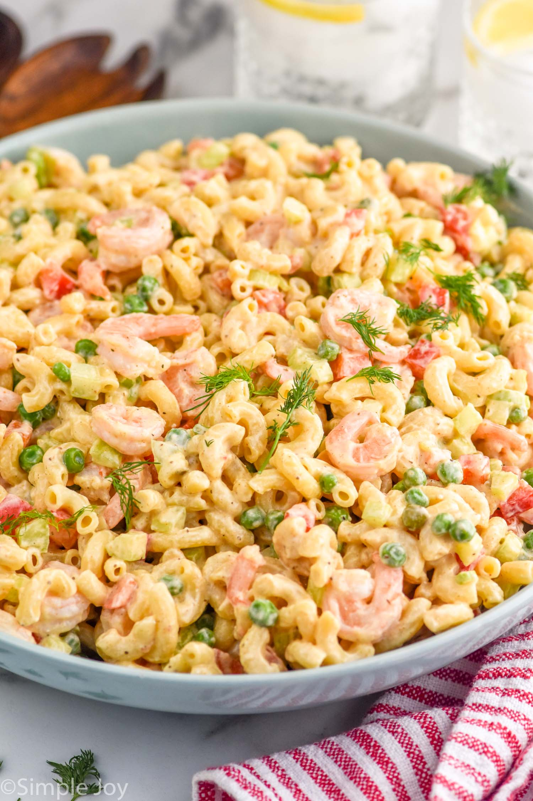

Home
Shrimp Pasta Salad

Description
This special shrimp pasta salad is one of my favorite summer salads, and it's oh-so-easy.
Ingredients
- 1 1/4 cups mayonnaise, or more if needed
- 2 teaspoons Dijon mustard
- 2 teaspoons ketchup
- 1/4 teaspoon Worchestershire sauce
- 1 teaspoon salt, or to taste
- 1 pinch cayenne pepper, or to taste
- 1 lemon, juiced
- 1/3 cup chopped fresh dill
- 1 (12 ounce) package small pasta shells
- 1 pound cooked, peeled, and deveined small shrimp - cut in half
- 1/2 cup finely diced red bell pepper
- 3/4 cup diced celery
- salt and ground black pepper to taste
- 1 pinch paprika, for garnish
- 3 sprigs fresh dill, or as desired
Directions
- Whisk 1 1/4 cups mayonnaise, Dijon mustard, ketchup, Worcestershire sauce, salt, and cayenne pepper together in a bowl;
add lemon juice and 1/3 cup chopped dill. Whisk until thoroughly combined; keep refrigerated.
- Bring a pot of well-salted water to a boil and stir in pasta shells; cook until tender, 8 to 10 minutes.
Drain and rinse with cold water to cool pasta slightly; drain again. Transfer to a large bowl.
- Toss shrimp with pasta; add red bell pepper, celery, and dressing to pasta mixture. Mix thoroughly to coat and fill shells with dressing.
Cover bowl with plastic wrap and refrigerate until chilled, 2 to 3 hours.
- Stir salad again before serving and season to taste with more salt, black pepper, lemon juice, and cayenne pepper if desired.
If salad seems a little dry, mix in a little more mayonnaise. Garnish with paprika and sprigs of dill.